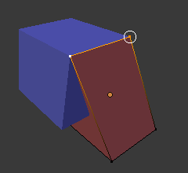
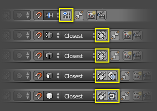

Підхоплення -- Snapping¶
Існує два типи операції підхопу -- snap, які ви можете використовувати у Blender'і. Перший тип дає підхоплення вашого виділу або курсора до заданої точки, тоді як другий тип використовується у ході трансформувань (пересув, оберт, масштаб) та дає підхоп вашого виділу до елементів у межах сцени.
Трансформаційне підхоплення¶
Орієнтир
| Mode: | Object, Edit, and Pose Mode |
|---|---|
| Header: | |
| Hotkey: | Shift-Tab |
Здатність підхоплювати елементи Об'єктів або Сіті до різних типів елементів сцени у ході трансформування вмикається іконкою з магнітом (яка стає червоною) у заголовку 3D Огляду -- 3D View.
Іконка з магнітом у заголовку 3D Огляду (червона, коли увімкнена).
Елемент Підхопу -- Snap Element¶
Орієнтир
| Mode: | Object, Edit, and Pose Mode |
|---|---|
| Header: | |
| Hotkey: | Shift-Ctrl-Tab |

Меню «Елемент Підхопу» -- Snap Element.
- Об'єм -- Volume
- Snaps to regions within the volume of the first Object found below the mouse cursor. Unlike the other options, this one controls the depth (i.e. Z coordinates in current view space) of the transformed element. By toggling the button that appears to the right of the snap target menu (see below), target objects will be considered as a whole when determining the volume center.
- Грань -- Face
- Підхоплює до поверхонь граней сітьових об'єктів. Корисно для ретопології.
- Ребро -- Edge
- Підхоплює до ребер сітьових об'єктів.
- Вершина -- Vertex
- Підхоплює до вершин сітьових об'єктів.
- Поділка -- Increment
Підхоплює до поділок координатної сітки. При знаходженні в Ортогональному огляді поділки для підхоплення змінюються залежно від рівня зумування.
Ghi chú
У цьому контексті фактичні поділки сітки не відповідають їх візуальному показу. Підхоплення буде використовувати роздільність показуваної сітки, але всі трансформації будуть відносними до початкової позиції (перед операцією підхоплення).
Ціль Підхопу -- Snap Target¶
Опції цілі підхопу стають активними, коли вибраним елементом підхопу є «Вершина» -- Vertex, «Ребро» -- Edge, «Грань» -- Face або «Об'єм» -- Volume. Ці опції визначають, яка частина виділу буде підхоплюватися до цільових об'єктів.
- Активне -- Active
- Рухає активний елемент (вершина у Режимі Правки -- Edit Mode, об'єкт у Режимі Об'єкта -- Object Mode) до цілі.
- Серединне -- Median
- Рухає середину виділу до цілі.
- Центр -- Center
- Рухає поточний центр трансформування до цілі. Може використовуватися разом з 3D курсором для підхоплення зі зсувом.
- Найближче -- Closest
- Рухає найближчу точку виділу до цілі.

«Найближче» -- Closest. |

«Активне» -- Active. |

«Серединне» -- Median. |
Додаткові опції підхоплення¶

In Object Mode. |

In Edit Mode. |
Як видно по підсвічених жовтим ділянках на ілюстрації вище, доступні також додаткові контролери для зміни поведінки підхоплення. Ці опції відрізняться для режимів (Об'єкта -- Object та Правки -- Edit), як і опція «Елемент Підхопу» -- Snap Element. Доступні чотири варіанти:
| Іконка | Подробиці |
|---|---|
| Вирівнює обертання за ціллю підхоплення. | |
| Проектує окремі елементи на поверхню інших об'єктів. | |
| Підхоплює елементи до їх власної сіті. | |
| Розглядає Об'єкти як ціле при знаходженні центру об'єму. | |
| Підхоплює до сітки, замість підхоплення до поділок відносно поточної локації. |
{kind=link}
Одночасно кілька цілей підхоплення¶

Одночасно кілька цілей підхоплення.
Після увімкнення функції Підхоплення при трансформуванні виділу (не тільки, коли утримується натисненою Ctrl) ви можете натиснути A для мічення поточної точки підхоплення, а потім продовжити до мічення ще й інших точок підхоплення, скільки забажаєте, а виділ буде підхоплюватися до усередненої локації усіх цих помічених точок.
Помітивши точку більше, ніж один раз, ви даєте їй більше вагомості при обчисленні усередненої локації.